소방설비산업기사(기계) (2018-03-04 기출문제)
1과목: 소방원론
1. 내화구조의 지붕에 해당하지 않는 구조는?
- 철근콘크리트조
- 철골철근콘크리트조
- 철재로 보강된 유리블록
- 무근콘크리트조
(정답률: 77%)

2. 조리를 하던 중 식용유 화재가 발생하면 신선한 야채를 넣어 소화할 수 있다. 이 때의 소화방법에 해당하는 것은?
- 희석소화
- 냉각소화
- 부촉매소화
- 질식소화
(정답률: 80%)
3. 소화방법 중 질식소화에 해당하지 않는 것은?
- 이산화탄소 소화기로 소화
- 포소화기로 소화
- 마른모래로 소화
- Halon-1302 소화기로 소화
(정답률: 79%)
4. 건축물에서 방화구획의 구획 기준이 아닌 것은?
- 피난구획
- 수평구획
- 층간구획
- 용도구획
(정답률: 59%)
5. 25℃에서 증기압이 100mmHg이고 증기밀도(비중)가 2인 인화성액체의 증기-공기밀도는 약 얼마인가? (단, 전압은 760mmHg로 한다.)
- 1.13
- 2.13
- 3.13
- 4.13
(정답률: 57%)
6. 미분무소화설비의 소화효과 중 틀린 것은?
- 질식
- 부촉매
- 냉각
- 유화
(정답률: 69%)
7. 가연물이 되기 위한 조건이 아닌 것은?
- 산화되기 쉬울 것
- 산소와의 친화력이 클 것
- 활성화 에너지가 클 것
- 열전도도가 작을 것
(정답률: 82%)
8. 자연발화성 물질인 것은?
- 황린
- 나트륨
- 칼륨
- 유황
(정답률: 52%)
9. 물의 비열과 증발잠열을 이용한 소화효과는?
- 희석효과
- 억제효과
- 냉각효과
- 질식효과
(정답률: 79%)
10. 기름탱크에서 화재가 발생하였을 때 탱크 하부에 있는 물 또는 물-기름 에멀젼이 뜨거운 열유층에 의해서 가열되어 유류가 탱크 밖으로 갑자기 분출하는 현상은?
- 리프트(Lift)
- 백화이어(Back-Fire)
- 플래쉬오버(Flash Over)
- 보일오버(Boil Over)
(정답률: 88%)
11. 분말소화약제 중 A, B, C급의 화재에 모두 사용할 수 있는 것은?
- 제1종 분말소화약제
- 제2종 분말소화약제
- 제3종 분말소화약제
- 제4종 분말소화약제
(정답률: 88%)
12. 전기 부도체이며 소화 후 장비의 오손 우려가 낮기 때문에 전기실이나 통신실등의 소화설비로 적합한 것은?
- 스프링클러소화설비
- 옥내소화전설비
- 포소화설비
- 이산화탄소소화설비
(정답률: 85%)
13. 메탄가스 1mol을 완전 연소시키기 위해서 필요한 이론적 최소 산소요구량은 몇 mol인가?
- 1
- 2
- 3
- 4
(정답률: 71%)
14. 적린의 착화온도는 약 몇 ℃인가?
- 34
- 157
- 180
- 260
(정답률: 64%)
15. 플래쉬오버(Flash Over)의 지연대책으로 틀린 것은?
- 두께가 얇은 가연성 내장재료를 사용한다.
- 열전도율이 큰 내장재료를 사용한다.
- 주요구조부를 내화구조로 하고 개구부를 적게 설치한다.
- 실내에 저장하는 가연물의 양을 줄인다.
(정답률: 76%)
16. 열에너지원 중 화학적 열에너지가 아닌 것은?
- 분해열
- 용해열
- 유도열
- 생성열
(정답률: 72%)
17. 20℃의 물 400g을 사용하여 화재를 소화하였다. 물 400g이 모두 100℃로 기화하였다면 물이 흡수한 열량은 몇 kcal인가? (단, 물의 비열은 1cal/gㆍ℃이고, 증발잠열은 539cal/g이다.)
- 215.6
- 223.6
- 247.6
- 255.6
(정답률: 61%)
18. 제3종 분말소화약제의 주성분으로 옳은 것은?
- 탄산수소칼륨
- 탄산수소나트륨
- 탄수소칼륨과 요소
- 제1인산암모늄
(정답률: 90%)
19. 청정소화약제 중 최대허용설계농도가 가장 낮은 것은?
- FC-3-1-10
- FIC-1311
- FK-5-1-12
- IG-541
(정답률: 42%)
20. 목조건축물의 온도와 시간에 따른 화재 특성으로 옳은 것은?
- 저온단기형
- 저온장기형
- 고온단기형
- 고온장기형
(정답률: 86%)
2과목: 소방유체역학
21. 지름이 10mm인 노즐에서 물이 방사되는 방사압(계기압력)이 392kPa라면 방수량은 약 몇 m3/min인가?
- 0.402
- 0.220
- 0.132
- 0.012
(정답률: 44%)
22. 옥내소화전 설비의 배고나 유속이 3m/s인 위치에 피토정압관을 설치하였을 때, 정체압과 정압의 차를 수두로 나타내면 몇 m가 되겠는가?
- 0.46
- 4.6
- 0.92
- 9.2
(정답률: 46%)
23. 관 속의 부속품을 통한 유체 흐름에서 관의 등가길이(상당길이)를 표현하는 식은? (단, 부차적 손실계수는 K, 관의 지름은 d, 관 마찰계수는 f이다.)
- Kfd
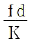
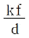
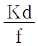
(정답률: 71%)
24. 물이 안지름 600mm의 파이프를 통하여 평균 3m/s의 속도로 흐를 때, 유량은 약 몇 m3/s인가?
- 0.34
- 0.85
- 1.82
- 2.88
(정답률: 61%)
25. 단면적이 10m2이고 두께가 2.5cm인 단열재를 통과하는 열전달량이 3kW이다. 내부(고온)면의 415℃이고 단열재의 열전도도가 0.2W/(mㆍK)일 때 외부(저온)면의 온도는?
- 353℃
- 378℃
- 196℃
- 402℃
(정답률: 55%)
26. 어떤 오일의 동점성계수가 2×10-4m2/s이고 비중이 0.9라면 점성계수는 약 몇 kg/(mㆍs)인가?(오류 신고가 접수된 문제입니다. 반드시 정답과 해설을 확인하시기 바랍니다.)
- 1.2
- 2.0
- 0.18
- 1.8
(정답률: 44%)
27. 다음 중 동점성계수의 차원으로 올바른 것은? (단, M, L, T는 각각 질량, 길이, 시간을 나타낸다.)
- ML-1T-1
- ML-1T-2
- L2T-1
- MTL-2
(정답률: 54%)
28. 개방된 물통에 깊이 2m로 물이 들어있고, 물 위에 깊이 2m의 기름이 떠 있다. 그림의 비중이 0.5일 때, 물통 밑바닥에서의 압력은 약 몇 Pa인가? (단, 유체 상부면에 작용하는 대기압은 무시한다.)
- 9810
- 16280
- 29420
- 34240
(정답률: 50%)
29. 다음 중 압력차를 측정하는데 사용되는 기구는?
- 로터미터
- U자관 액주계
- 열전대
- 위어
(정답률: 65%)
30. 정지유체 속에 잠겨있는 경사진 평면에서 압력이 의해 작용하는 합력의 작용점에 대한 설명으로 옳은 것은?
- 도심의 아래에 있다.
- 도심의 위에 있다.
- 도심의 위치와 같다.
- 도심의 위치와 관계가 없다.
(정답률: 72%)
31. 관의 단면에 축소부분이 있어서 유체를 단면에서 가속시킴으로써 생기는 압력차이를 측정하여 유량을 측정하는 장치가 있다. 다음 중 이에 해당하지 않는 것은?
- nozzle meter
- orifice meter
- venturi meter
- rota meter
(정답률: 58%)
32. 길이 300m, 지름 10cm인 관에 1.2m/s의 평균 속도로 물이 흐르고 있다면 손실수두는 약 몇 m인가? (단, 관의 마찰계수는 0.02이다.)
- 2.1
- 4.4
- 6.7
- 8.3
(정답률: 64%)
33. 어떤 펌프가 1400rpm으로 회전할 때 12.6m의 전양정을 갖는다고 한다. 이 펌프를 1450rpm으로 회전할 경우 전양정은 약 몇 m인가? (단, 상사 법칙을 만족한다고 한다.)
- 10.6
- 12.6
- 13.5
- 14.8
(정답률: 49%)
34. 송풍기의 전압이 10KPa이고, 풍량이 3m3/s인 송풍기의 동력은 몇 kW인가? (단, 공기의 밀도는 1.2m3/kg이다.)
- 30
- 56
- 294
- 353
(정답률: 28%)
35. 20℃, 100kPa의 공기 1kg을 일차적으로 300kPa까지 등온압축시키고 다시 1000kPa까지 단열압축시켰다. 압축 후의 절대온도는 약 몇 K인가? (단, 모든 과정은 가역과정이고 공기의 비열비는 1.4이다.)
- 413K
- 433K
- 453K
- 473K
(정답률: 39%)
36. 흐르는 유체에서 정상 유동(steady flow)이란 어떤 것을 지칭하는가?
- 임의의 점에서 유체속도가 시간에 따라 일정하게 변하는 흐름
- 임의의 점에서 유체속도가 시간에 따라 변하지 않는 흐름
- 임의의 시각에서 유로 내 모든 점의 속도벡터가 일정한 흐름
- 임의의 시각에서 유로 내 각 점의 속도벡터가 서로 다른 흐름
(정답률: 42%)
37. 어떤 탱크 속에 들어 있는 산소의 밀도는 온도가 25℃일 때 2.0kg/m3이다. 이 때 대기압이 97kPa이라면, 이 산소의 압력은 계기압력으로 약 몇 kPa인가? (단, 산소의 기체상수는 259.8J/(kgㆍK)이다.)
- 58
- 65
- 72
- 88
(정답률: 33%)
38. 60℃의 물 200kg 과 100℃의 포화 증기를 적당량 혼합하면 90℃의 물이 된다. 이 때 혼합하여야 할 포화 증기의 양은 약 몇 kg인가? (단, 100℃에서 물의 증발 잠열은 2256kJ/kg이고, 물의 비열은 4.186kJ/(kgㆍK)이다.)
- 8.53
- 9.12
- 10.02
- 10.93
(정답률: 26%)
39. 체적이 0.031m3인 액체에 61000kPa의 압력을 가했을 때 체적이 0.025m3 이 되었다. 이 때 액체의 체적탄성계수는 약 얼마인가?
- 2.38×108Pa
- 2.62×108Pa
- 1.23×108Pa
- 3.15×108Pa
(정답률: 42%)
40. 지름(D) 60mm인 물 분류가 30m/s의 속도(V)로 고정평판에 대하여 45℃ 각도로 부딫일 때 지면에 수직 방향으로 작용하는 힘(Fy)은 약 몇 N인가?
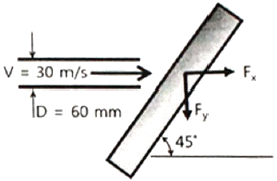
- 1700
- 1800
- 1900
- 2000
(정답률: 59%)
3과목: 소방관계법규
41. 기상법에 따른 이상기상의 예보 또는 특보가 있을 때 화재에 관한 성보를 발령하고 그에 따른 조치를 할 수 있는 자는?
- 소방청장
- 행정안전부장관
- 소방본부장
- 시ㆍ도지사
(정답률: 47%)
42. 화재예방, 소방시설 설치ㆍ유지 및 안전관리에 관한 법령상 성능위주설계를 하여야 하는 특정소방대상물(신축하는 것만 해당)의 기준으로 옳은 것은?
- 건축물의 높이가 100m 이상인 아파트 등
- 연면적 100000m2이상인 특정소방대상물
- 연면적 15000m2 이상인 특정소방대상물로서 철도 및 도시철도 시설
- 하나의 건축물에 영화상여관이 10개 이상인 특정소방대상물
(정답률: 52%)
43. 소방기본법령상 특수가연물 중 품명과 지정수량의 연결이 틀린 것은?
- 사류 - 1000kg 이상
- 볏집류 - 3000kg 이상
- 석탄ㆍ목탄류 - 10000kg 이상
- 합성수지류 발포시킨 것 - 20m3 이상
(정답률: 64%)
44. 대통령령 또는 화재안전기준이 변경되어 그 기준이 강화되는 경우 기존의 특정소방대상물의 소방시설 중 대통령령으로 정하는 것으로 변경으로 강화된 기준을 적용하여야 하는 소방시설은? (단, 건축물의 신축ㆍ개축ㆍ재축ㆍ이전 및 대수선 중인 특정소방대상물은 포함한다.)
- 비상경보설비
- 화재조기진압용 스프링 클러설비
- 옥내소화전설비
- 제연설비
(정답률: 55%)
45. 화재예방, 소방시설 설치ㆍ유지 및 안전관리에 관한 법령상 스프링클러설비를 설치하여야 하는 특정소방대상물의 기준으로 틀린 것은? (단, 위험물 저장 및 처리 시설 중 가스시설 또는 지하구는 제외한다.)(오류 신고가 접수된 문제입니다. 반드시 정답과 해설을 확인하시기 바랍니다.)
- 물류터미널로서 바닥면적 합계가 5000m3 이상인 경우에는 모든 층
- 숙박이 가능한 수련시설에 해당하는 용도로 사용되는 시설의 바닥면적의 합계가 600m2 이상인 것은 모든 층
- 종교시설(주요구조부가 목조인 것은 제외)로서 수용인원이 100명 이상인 것에 해당하는 경우에는 모든 층
- 지하가(터널은 제외)로서 연면적은 1000m2 이상인 것
(정답률: 38%)
46. 화재예방, 소방시설 설치ㆍ유지 및 안전관리에 관한 법상 피난시설, 방하구획 또는 방화시설의 폐쇄ㆍ훼손ㆍ변경들의 행위를 한자에 대한 과태료 부과기중으로 옳은 것은?
- 500만원 이하
- 300만원 이하
- 200만원 이하
- 100만원 이하
(정답률: 68%)
47. 소방기본법량상 시ㆍ도지사가 이웃하는 다른 시ㆍ도지사와 소방업무에 관하여 상호응원 협정을 체결하고자 하는 때에 포함되어야 할 사항이 아닌 것은?
- 소방신호방벙의 통일
- 화재조사할동에 관한 사항
- 응원출동 대상지역 및 규모
- 출동대원 수당ㆍ식사 및 피복의 수선소요경비의 부담에 관한 사항
(정답률: 65%)
48. 소방시설공사업볍령상 완공검사를 위한 현장 확인 대상 측정소방대상물의 범위 기준으로 틀린 것은?
- 운동시설
- 호스릴 이산화탄소 소화설비가 설치되는 것
- 연면적 10000m2 이상이거나 11층 이상인 특정소방대상물(아파트는 제외)
- 가연성가스를 제조ㆍ저장 또는 취급하는 시설 중 지상에 노출된 가연성가스 탱크의 저장용량 합계가 1000톤 이상인 시설
(정답률: 59%)
49. 위험물안전관리법령상 제조소와 사용전압이 35000V를 초과하는 특고압가공전선에 있어서 안전거리는 몇 m이상을 두어야 하는가? (단, 제6류 위험물을 취급하는 제조소는 제외한다.)
- 3
- 5
- 20
- 30
(정답률: 58%)
50. 화재예방, 소방시설 설치ㆍ유지 및 안전관리에 관한 법령상 분말형태의 소화약제를 사용하는 소화기의 내용연수로 옳은 것은?
- 10년
- 7년
- 3년
- 5년
(정답률: 73%)
51. 위험물안전관리법령상 정기점검의 대상인 제조소등의 기준으로 틀린 것은?
- 이송취급소
- 위험물을 취급하는 탱크로서 지하에 매설된 탱크가 있는 일반취급소
- 지정수량의 100배 이상의 위험물을 저장하는 옥외저장소
- 지정수량의 150배 이상의 위험물을 저장하는 옥외탱크저장소
(정답률: 62%)
52. 제조소 또는 일반취급소에서 변경허가를 받아야 하는 경우가 아닌 것은?
- 배출설비를 신설하는 경우
- 불활성기체의 봉입장치를 신설하는 경우
- 위험물의 펌프설비를 증설하는 경우
- 위험물취급탱크의 탱크전용실을 증설하는 경우
(정답률: 58%)
53. 특수가연물의 저장 및 취급기준 중 다음 ( ) 안에 알맞은 것은? (단, 석탄ㆍ목탄류의 경우는 제외한다.)
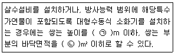
- ㉠ 15, ㉡ 200
- ㉠ 15, ㉡ 300
- ㉠ 10, ㉡ 50
- ㉠ 10, ㉡ 200
(정답률: 60%)
54. 화재예방, 소방시설 설치ㆍ유지 및 안전관리에 관한 법령상 소방안전관리자를 두어야 하는 1급 소방안전관리 대상물의 기준으로 틀린 것은?
- 30층 이상(지하층은 제외한다)이거나 지상으로부터 높이가 120m 이상인 아파트
- 가연성 가스를 1000톤 이상 저장ㆍ취급하는 시설
- 연면적 15000m2 이상인 특정소방 대상물(아파트는 제외)
- 지하구
(정답률: 71%)
55. 소방본부장 또는 소방서장은 건축허가 등의 동의요구서류를 점수한 날부터 며칠 이내에 건축허가등의 동의여부를 회신하여야 하는가? (단, 허가를 신청한 것 축물은 특급 소방안전 관리대상물이다.)
- 5일
- 7일
- 10일
- 30일
(정답률: 49%)
56. 공동 소방안전관리자를 선임해야 하는 특정소방대상물의 기준이 아닌 것은?
- 판매시설 중 도매시장 및 소매시장
- 복합건축물로서 층수가 5층 이상인 것
- 지하층을 제외한 층수가 7층 이상인 고층 건축물
- 복합건축물로서 연면적이 5000m2인상인 것
(정답률: 61%)
57. 소방시설업의 영업정지처분을 받고 그영업 정지 기간에 영업을 한 자에 대한 벌칙기준으로 옳은 것은?
- 1년 이하의 징역 또는 1000만원 이하의 벌금
- 2년 이하의 징역 또는 1200만원 이하의 벌금
- 3년 이하의 징역 또는 1500만원 이하의 벌금
- 5년 이하의 징역 또는 3000만원 이하의 벌금
(정답률: 59%)
58. 특정소방대상물의 자동화재탐지설비 설치 면제기준 중 다음()안에 알맞은 것은? (단, 자동화재탐지설비의 기능은 감지ㆍ수신ㆍ경보기능을 말한다.)
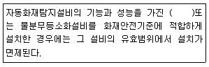
- 비상경보설비
- 연소지설비
- 연결살수설비
- 스프링클러설비
(정답률: 66%)
59. 위험물안전관리법령상 제조소 또는 일반 취급소에서 취급하는 제4류 위험물의 최대 수량이 합이 지정수량의 48만배 이상인 사업소의 자체소방대에 두는 화학소방자동차 및 인원기준으로 다음 ()안에 알맞은 것은?
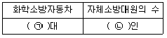
- ㉠ 1대, ㉡ 5인
- ㉠ 2대, ㉡ 10인
- ㉠ 3대, ㉡ 15인
- ㉠ 4대, ㉡ 20인
(정답률: 69%)
60. 소방활동 종사 명령으로 소방활동에 종사한 사람이 그로 인하여 사망하거나 부상을 입은 경우 보상하여야 하는 자는?
- 국무총리
- 행전안전부장관
- 시ㆍ도지사
- 소방본부장
(정답률: 80%)
4과목: 소방기계시설의 구조 및 원리
61. 피난사다리의 중량기준 중 다음 ()안에 알맞은 것은?
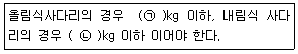
- ㉠ 25, ㉡ 30
- ㉠ 30, ㉡ 25
- ㉠ 20, ㉡ 35
- ㉠ 35, ㉡ 20
(정답률: 40%)
62. 고발포용 고정포방출구의 팽창비율로 옳은 것은?
- 팽창비 10 이상 20 미만
- 팽창비 20 이상 50 미만
- 팽창비 50 이상 100 미만
- 팽창비 80 이상 1000 미만
(정답률: 69%)
63. 대형소화기의 종별 소화약제의 최소 충 전용량으로 옳은 것은?
- 기계포 : 15L
- 분말 : 20kg
- CO2 : 40kg
- 강화액 : 50L
(정답률: 65%)
64. 소화수조의 설치기준 중 다음 ()안에 알맞은 것은?
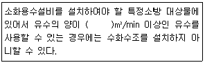
- 0.8
- 1.3
- 1.6
- 2.6
(정답률: 52%)
65. 이산화탄소소화설비 가스압력식 기동장치의 기준 중 틀린 것은?
- 기동용가스용기 및 해당 용기에 사용하는 밸브는 25MPa 이상의 압력에 견딜 수 있는 것으로 할 것
- 기동용가스용기에는 내압시험압력의 0.64배부터 내압시험압력 이하에서 작동하는 안전장치를 설치할 것
- 기동용가스용기의 용적은 5L 이상으로 하고, 해당 용기에 저장하는 질수 등의 비활성기체는 6.0MPa 이상(21℃ 기준)의 압력으로 충전할 것
- 기동용가스용기에는 충전여부를 확인할 수 있는 압력게이지를 설치할 것
(정답률: 63%)
66. 화재조기진압용 스프링클러설비를 설치할 장소의 구조 기준 중 틀린 것은?
- 천장의 기울기가 168/1000을 초과하지 않아야 하고, 이를 초과하는 경우에는 반자를 지면과 수평으로 설치할 것
- 천장은 평평하여야 하면 철재나 목재트러스 구조인 경우. 철재나 목재의 돌출 부분이 102mm를 초과하지 아니할 것
- 보로 사용되는 목재ㆍ콘크리트 및 철재 사이의 간격이 0.9m 이상 2.3m 이하일 것. 다만, 보의 간격이 2.3m 이상인 경우에는 화재조기진압용 스프링클러헤드의 동작을 원활히 하기 위하여 보로 고획된 부분의 천장 및 반자의 넓이가 28m2를 초과하지 아니할 것
- 해당층 높이가 10m 이하일 것. 다만, 2층 이상일 경우에는 해당층의 바닥을 내화구조로 하고 다른 부분과 방화구획 할 것
(정답률: 36%)
67. 물분무등소화설비 중 이산화탄소소화설비를 설치하여야 하는 특정소방대상물에 설치하여야 할 인명구조기구의 종류로 옳은 것은?
- 방열복
- 방화복
- 인공소생기
- 공기호흡기
(정답률: 73%)
68. 물분무소화설비 송수구의 설치기준 중 다음 () 안에 알맞은 것은?
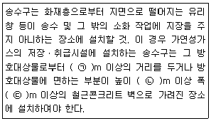
- ㉠ 20, ㉡ 1.0, ㉢ 1.5
- ㉠ 20, ㉡ 1.5, ㉢ 2.5
- ㉠ 40, ㉡ 1.0, ㉢ 1.5
- ㉠ 40, ㉡ 1.5, ㉢ 2.5
(정답률: 59%)
69. 가연성 가스의 저장ㆍ취급시설에 설치하는 연결살수설비의 헤드 설치기준 중 다음 ()안에 알맞은 것은? (단, 지하에 설치된 가연성가스의 저장ㆍ취급시설로서 지상에 노출된 부분이 없는 경우는 제외한다.)
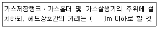
- 2.1
- 2.3
- 3.0
- 3.7
(정답률: 46%)
70. 연소방지설비 방수헤드의 설치기준으로 틀린 것은?
- 방수헤드간의 수평거리는 연소 방지 설비 전용헤드의 경우에는 2m 이하로 할 것
- 방수헤드간의 수평거리는 스프링클러헤드의 경우에는 1.5m 이하로 할 것
- 살수구역은 환기구 등을 기준으로 지하구의 길이방향으로 350m 이내마다 1개 이상 설치하되, 하나의 살수구역의 길이는 3m 이상으로 할 것
- 천장 또는 반자의 실내의 면하는 부분에 설치할 것
(정답률: 40%)
71. 연결송수관설비의 송수구 설치기준 중 건식의 경우 송수구 부근 자동배수밸브 및 체크밸브의 설치순서로 옳은 것은?
- 송수구→체크밸브→자동배수밸브→체크밸브
- 송수수→체크밸브→자동배수밸브→개폐밸브
- 송수수→자동밸브→자동배수밸브→체크밸브→개폐밸브
- 송수구→자동배수밸브→체크밸브→자동배수밸브
(정답률: 65%)
72. 옥내소화전설비의 설치기준 중 틀린 것은?
- 성능시험배관은 펌프의 토출측에 설치된 개폐밸브 이후에서 분기하여 설치된 개폐밸브 이후에서 분기하여 설치하고, 유량측정장치를 기준으로 전단 직관부에 개폐밸브를 후단 직관부에는 유량 조절밸브를 설치하여야 한다.
- 가압송수장치의 체절운전 시 수온의 상승을 방지하기 위하여 체크밸브와 펌프사이에서 분기한 구경 20mm 이상의 배관에 체절압력 미만에서 개방되는 릴리프밸브를 설치하여야 한다.
- 펌프의 성능은 체절운전 시 정격토출압력의 140%를 초과하지 아니하고, 정격토출량의 150%로 운전 시 정격토출압력의 65% 이상이 되어야 한다.
- 연결송수관설비의 배관과 겸용할 경우의 주배관은 구경 100mm 이상, 방수구로 연결되는 배관의 구격은 65mm 이상의 것으로 하여야 한다.
(정답률: 47%)
73. 이산화탄소 또는 할로겐화합물을 방사하는 소화기구(자동확산소화기를 제외)의 설치기준 중 다음 ()안에 알맞은 것은? (단, 배기를 위한 유효한 개구부가 잇는 장소인 경우는 제외한다.
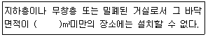
- 15
- 20
- 30
- 40
(정답률: 59%)
74. 스프링클러설비 헤드의 설치기준 중 틀린 것은?
- 살수가 방해되지 아니하도록 스프링클러 헤드로부터 반경 60cm 이상의 공간을 보유할 것
- 스프링클러헤드와 그 부착면과의 거리는 30cm 이하로 할 것
- 측벽형스프링클러헤드를 설치하는 경우긴 변의 한쪽 벽에 일렬로 설치하고 4.5m 이내마다 설치할 것
- 상부에 설치된 헤드의 방출수에 따라 감열부에 영향을 받을 우려가 있는 헤드에는 방출수를 차단할 수 있는 유효한 차폐판을 설치할 것
(정답률: 47%)
75. 호스릴분말소화설비 노즐이 하나의 노즐마다 1분당 방사하는 소화약제의 양 기준으로 옳은 것은?
- 제1종 분말-45kg
- 제2종 분말-30kg
- 제3종 분말-30kg
- 제4종 분말-20kg
(정답률: 51%)
76. 전역방출방식의 분말소화설비를 설치한 특정 소방대상물 또는 그 부분의 자동폐쇄장치 설치기준 중 다음 ()안에 알맞은 것은?
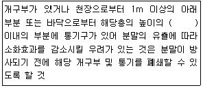
- 1/5
- 1/2
- 2/3
- 3/4
(정답률: 64%)
77. 표준형 스프링클러헤드의 감도 특성에 의한 분류 중 조기반응(Fast response)에 따른 스프링클러헤드의 반응시간지수(RTI)기준으로 옳은 것은?
- 50(mㆍs)1/2이하
- 80(mㆍs)1/2이하
- 150(mㆍs)1/2이하
- 350(mㆍs)1/2이하
(정답률: 52%)
78. 특정소방대상물에 따라 적응하는 포소화설비 기준 중 특수가연물을 저장ㆍ취급하는 공장 또는 창고에 적응하는 포소화설비의 종류가 아닌 것은?
- 포워터스프링클러설비
- 고정포방출설비
- 호스릴포소화설비
- 압축공기포소화설비
(정답률: 51%)
79. 미분무소화설비 수원의 설치기준 중 다음 ()안에 알맞은 내용을 옳은 것은?
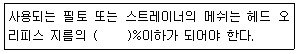
- 40
- 65
- 80
- 90
(정답률: 56%)
80. 호스릴 할론소화설비의 분사헤드 설치기준 중 방호대상물의 각 부분으로부터 하나의 호스접결구까지의 수평거리가 몇 m 이하가 되도록 설치하여야 하는가?
- 10
- 15
- 20
- 25
(정답률: 35%)